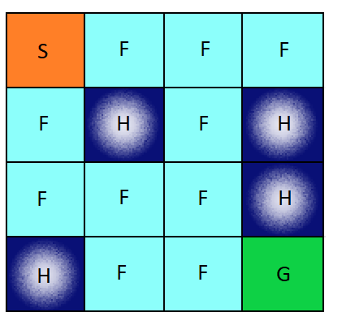

Projects

UniTrack
- Developed a productivity tool using NodeJS and MongoDB which provides students with essential information required to plan their semesters at one-stop; over 75 students enrolled in pilot test
- Building a comprehensive, predictive model that tracks real-time footfall in libraries and also to suggest personalized study spots using Machine Learning (Tensorflow), Arduino, and Arducam

Smart Teeko AI
- Implemented Teeko AI in Python using minimax algorithm and heuristic evaluation
- Created a heuristic scoring function to generate a subtree of possible states and returned the best next possible move using minimax algorithm
- AI wins 2/3 games guarenteed and returns within 3 seconds
Quadcopter in SystemVerilog
- Learned how to implement a complex digital design in verilog
- Learned the importance of validation and how to create a self checking testbench.
- Learned how to constrain and synthesize verilog using Synopsys DC.
- Overall, built a complex digital design with self-checking testbenches in SV while synthesizing with Synopsys DC

Reinforcement Learning - OpenAI Gym
- Performed Q-Learning on Frozen-Lake-v0 to get an average episode-reward over 100 episodes as 70%+
- Performed SARSA on Frozen-Lake-v0 to get an average episode-reward over 100 episodes as 60%+
- Used 'Pickle' library to update and store values at each stage

Heap Memory Allocator
- Built a dynamic memory allocator from scratch utilizing an implicit free-list structure, next-fit placement policy, immediate coalescing, and splitting to optimize choice of free blocks